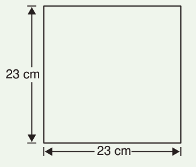
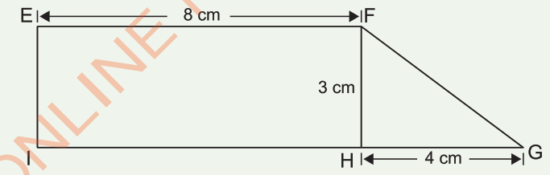
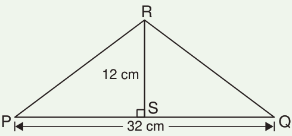

Revision Exercise
1.
Find the area of a rectangle whose length is 19 centimetres and width is 16 centimetres.
2.
Find the area of the following shape.

3.
The length of one side of a square is 41 centimetres.
Find the area of the square.
4.
Find the area of the following shape.

5.
A triangle has a height of 25 metres and a base of 32 metres.
Find its area.
6.
Find the area of the shape PQR.
